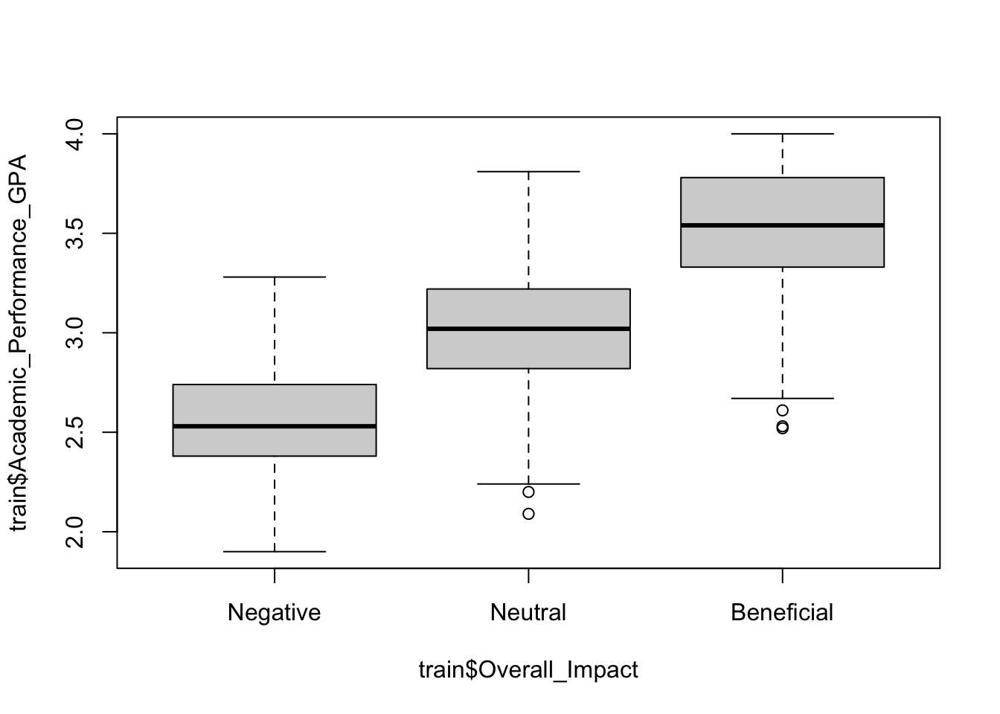

Informe
0.1 Introducción
Este trabajo aborda el análisis exploratorio de datos sobre el conjunto de datos `Social_media_impact_on_life.csv´. Cada observación representa a un estudiante y recopila información estructurada en cinco grandes bloques de variables: Identificación y demografía, hábitos tecnológicos, patrones de descanso, bienestar y salud mental, y rendimiento y resultado global.
El objetivo de nuestro proyecto es analizar y predecir el rendimiento académico de los alumnos.
0.2 Datos
El conjunto de datos analizado cuenta con un total de 4500 observaciones y 16 variables, abarcando la información estructural necesaria para el estudio.
A continuación, se presenta una tabla interactiva con una vista preliminar de los datos. Esta herramienta permite explorar las primeras filas de forma dinámica, facilitando la verificación inicial de los tipos de variables, la detección de posibles valores ausentes y la comprensión general de la estructura del dataset antes de proceder con los análisis estadísticos y los modelos.
0.3 Descripcion de las variables
Describir cada variable y que valores posibles toman
- Student_ID: Identificador único (alfanumérico) asignado a cada alumno registrado en el estudio.
- Age: Edad del estudiante. Toma valores numéricos enteros.
- Academic_Level: Nivel académico o educativo. Variable categórica.
- Primary_Platform: Plataforma de redes sociales principal que utiliza el usuario. Variable categórica.
- Daily_Usage_Hours: Promedio de horas diarias dedicadas al uso de redes sociales, es una variable numérica continua.
- Weekend_Extra_Hours: Horas adicionales de consumo digital durante los findes de semana.
- Device_Type: Dispositivo principal desde el que accede a las redes, variable categórica.
- Sleep_Duration_Hours: Duración media del sueño por noche en horas. Variable numérica continua.
- Sleep_Quality_Score: Puntuación sobre la calidad del sueño. Toma valores numéricos enteros entre 1 y 5, donde los valores más bajos indican peor descanso.
- Late_Night_Usage: Indica si el usuario utiliza las redes sociales a altas horas de la noche. Es una variable booleana.
- Social_Comparison_Frequency: Frecuencia con la que el estudiante se compara con otros en las redes sociales, variable categórica.
- Perceived_Stress_Score: Nivel o puntuación de estrés. Es una variable numérica basada en escalas psicométricas.
- Mental_Health_Index: Índice general de salud mental del estudiante. Variable numérica.
- Academic_Performance_GPA: Calificación o promedio académico. Variable numérica continua.
- Overall_Impact: Variable objetivo o de salida que resume el impacto global de las redes sociales en la vida del usuario. Esta variable es categórica.
0.4 Estudio univariante
En esta sección realizamos una inspección descriptiva individual de todas las variables de nuestro conjunto de datos. A través de las funciones dfSummary() y summary(), evaluamos las medidas de tendencia central (media y mediana), la dispersión y la distribución de frecuencias de factores demográficos, de descanso, psicológicos y de consumo digital.
| No | Variable | Stats / Values | Freqs (% of Valid) | Graph | Valid | Missing | |||||||||||||||||||||||||||||||||||||||||||||||||||||||
|---|---|---|---|---|---|---|---|---|---|---|---|---|---|---|---|---|---|---|---|---|---|---|---|---|---|---|---|---|---|---|---|---|---|---|---|---|---|---|---|---|---|---|---|---|---|---|---|---|---|---|---|---|---|---|---|---|---|---|---|---|---|
| 1 | Student_ID [character] |
|
|
 |
4500 (100.0%) | 0 (0.0%) | |||||||||||||||||||||||||||||||||||||||||||||||||||||||
| 2 | Age [integer] |
|
12 distinct values |  |
4500 (100.0%) | 0 (0.0%) | |||||||||||||||||||||||||||||||||||||||||||||||||||||||
| 3 | Gender [factor] |
|
|
 |
4500 (100.0%) | 0 (0.0%) | |||||||||||||||||||||||||||||||||||||||||||||||||||||||
| 4 | Academic_Level [ordered, factor] |
|
|
 |
4500 (100.0%) | 0 (0.0%) | |||||||||||||||||||||||||||||||||||||||||||||||||||||||
| 5 | Primary_Platform [factor] |
|
|
 |
4500 (100.0%) | 0 (0.0%) | |||||||||||||||||||||||||||||||||||||||||||||||||||||||
| 6 | Daily_Usage_Hours [numeric] |
|
129 distinct values |  |
4500 (100.0%) | 0 (0.0%) | |||||||||||||||||||||||||||||||||||||||||||||||||||||||
| 7 | Weekend_Extra_Hours [numeric] |
|
43 distinct values |  |
4500 (100.0%) | 0 (0.0%) | |||||||||||||||||||||||||||||||||||||||||||||||||||||||
| 8 | Device_Type [factor] |
|
|
 |
4500 (100.0%) | 0 (0.0%) | |||||||||||||||||||||||||||||||||||||||||||||||||||||||
| 9 | Sleep_Duration_Hours [numeric] |
|
73 distinct values |  |
4500 (100.0%) | 0 (0.0%) | |||||||||||||||||||||||||||||||||||||||||||||||||||||||
| 10 | Sleep_Quality_Score [integer] |
|
|
 |
4500 (100.0%) | 0 (0.0%) | |||||||||||||||||||||||||||||||||||||||||||||||||||||||
| 11 | Late_Night_Usage [factor] |
|
|
 |
4500 (100.0%) | 0 (0.0%) | |||||||||||||||||||||||||||||||||||||||||||||||||||||||
| 12 | Social_Comparison_Frequency [ordered, factor] |
|
|
 |
4500 (100.0%) | 0 (0.0%) | |||||||||||||||||||||||||||||||||||||||||||||||||||||||
| 13 | Perceived_Stress_Score [numeric] |
|
41 distinct values |  |
4454 (99.0%) | 46 (1.0%) | |||||||||||||||||||||||||||||||||||||||||||||||||||||||
| 14 | Mental_Health_Index [integer] |
|
67 distinct values |  |
4500 (100.0%) | 0 (0.0%) | |||||||||||||||||||||||||||||||||||||||||||||||||||||||
| 15 | Academic_Performance_GPA [numeric] |
|
194 distinct values |  |
4415 (98.1%) | 85 (1.9%) | |||||||||||||||||||||||||||||||||||||||||||||||||||||||
| 16 | Overall_Impact [ordered, factor] |
|
|
 |
4500 (100.0%) | 0 (0.0%) |
Generated by summarytools 1.1.5 (R version 4.5.2)
2026-10-16
En base a este primer vistazo a los datos no hemos detectado ningún valor claramente erróneo que haya que tratar.
0.5 Partición de los datos
Dada la cantidad de datos decidimos una partición train(0.65) -test (0.2) -validación (0.15).
A partir de ahora trabajamos únicamente con train. Sobre train haremos todo el análisis exploratorio de datos. Usaremos test para ir evaluando y estudiando la capacidad de generalización de los modelos que entrenemos en train. Por último, dejaremos la partición de validación para el final del todo del proyecto: una vez tengamos un modelo final seleccionado estudiaremos su rendimiento en esta partición de validación. Esto nos permitirá simular un caso real en el que podamos estudiar cómo funciona nuestro modelo final ante datos nunca vistos.
0.6 Análisis exploratorio de datos
Realizamos una exploración exclusivamente sobre el conjunto de entrenamientos (train) para evitar la fuga de información hacia los conjuntos de evaluación (test y validation).
Como sabemos de la exploración inicial de nuestro datos, tenemos datos faltantes en dos columnas, la primera Perceived_Stress_Score tiene una cantidad de NA’s en porcentaje de 1%, y la variable Academic_Performance_GPA 2%. Dado que la proporción de datos ausentes en train es mínimo, decidimos no trabajar con dichas observaciones.
Como no tenemos un target binario y tenemos dudas entre 2 posibles candidatos para variable objetivo, vamos a estudiar el comportamiento y relación de las variables Academic_Performance_GPA y Overall_Impact.

Ya hemos solventado la duda que teníamos sobre si Overall_Impact podría ser una categorización de Academic_Performance_GPA. El boxplot de arriba revela que claramente son variables que están relacionadas: notas mayores están más asociadas a la categoría de impacto beneficioso y peores notas están más asociadas a la categoría de impacto negativo. Del mismo modo, notas intermedias se asocian más con un impacto neutral.
Así, decidimos que nuestro target será Academic_Performance_GPA. Como es una variable continua y queremos trabajar con un target binario, debemos binarizarla.

Binarizamos la variable Academic_Performance_GPA mediante un punto de corta en 3.5. para diferenciaar a los alumnos de rendimiento excelente del resto de calificaciones.
Rendimiento_bajo_medio Rendimiento_alto
1552 1296 Que preguntas tengo sobre mis datos, objetivos que tengo.
- ¿Cuál es la proporción de estudiantes con muy buenas notas?
- ¿Existe diferencia entre la calidad de sueño y el género?
- ¿Existe diferencia entre la calidad de sueño en función de las notas (target)?
- ¿Cómo se relaciona la edad con el número de horas de consumo RRSS?
- Relación entre horas de uso y mental health
Nos interesa estudiar la relación entre todas las variables y el target.
0.6.1 Relaciones entre el target y el resto de variables.
0.6.1.1 Comparación de Age y Target

Este diagrama de caja muestra una distribución de la edad prácticamente idéntica entre los estudiantes con rendimiento académico bajo/ medio y aquellos que con un rendimiento alto. En ambos grupos, la mediana de edad se sitúa en torno a los 19 años.
Para contrartar formalmente si existen diferencia significativas en la distribución de la edad según el rendimiento académico, aplicamos el test no paramétrico de Wilcoxon.
Test estadístico (Wilcoxon)
Wilcoxon rank sum test with continuity correction
data: Age by target
W = 988026, p-value = 0.4122
alternative hypothesis: true location shift is not equal to 0Observamos que obtenemos los valores \(988026\) para el estadístico W y para el p-valor \(0.4122\). Como el p-valor es notablemente superior al nivel de significación habitual (\(\alpha = 0.05\)), no podemos rechazar la hipótesis nula \(H_0\), lo que indica que no existen diferencias estadísticamente significativas en la edad entre los alumnos de alto rendimiento y los de rendimiento bajo o medio. Por lo tanto, la edad no presenta un comportamiento diferencial respecto al rendimient académico, por lo que no muestra capacidad explicativa sobre el target.
0.6.1.2 Comparación de Daily_Usage_Hours y Target

Test estadístico (Wilcoxon)
Wilcoxon rank sum test with continuity correction
data: Daily_Usage_Hours by target
W = 1622909, p-value < 2.2e-16
alternative hypothesis: true location shift is not equal to 00.6.1.3 Comparación de Device_Type y Target

Test de independencia Chi-cuadrado
Pearson's Chi-squared test
data: table(train$Device_Type, train$target)
X-squared = 0.51705, df = 2, p-value = 0.77220.6.1.4 Comparación de Sleep_Quality_Score y Target

Test estadístico (Wilcoxon)
Wilcoxon rank sum test with continuity correction
data: Sleep_Quality_Score by target
W = 536281, p-value < 2.2e-16
alternative hypothesis: true location shift is not equal to 00.6.1.5 Comparación de Late_Night_Usage y Target

Test de independencia Chi-cuadrado
Pearson's Chi-squared test with Yates' continuity correction
data: table(train$Late_Night_Usage, train$target)
X-squared = 139.35, df = 1, p-value < 2.2e-160.6.1.6 Comparación de Social_Comparison_Frequency y Target

Test de independencia Chi-cuadrado
Pearson's Chi-squared test
data: table(train$Social_Comparison_Frequency, train$target)
X-squared = 1.4687, df = 4, p-value = 0.83220.6.1.7 Comparación de Perceived_Stress_Score y Target

Test estadístico (Wilcoxon)
Wilcoxon rank sum test with continuity correction
data: Perceived_Stress_Score by target
W = 1553783, p-value < 2.2e-16
alternative hypothesis: true location shift is not equal to 00.6.1.8 Comparación de Mental_Health_Index y Target

Test estadístico (Wilcoxon)
Wilcoxon rank sum test with continuity correction
data: Mental_Health_Index by target
W = 449073, p-value < 2.2e-16
alternative hypothesis: true location shift is not equal to 00.6.1.9 Comparación de Horas de Sueño y Target

Test estadístico (Wilcoxon)
Wilcoxon rank sum test with continuity correction
data: Sleep_Duration_Hours by target
W = 484253, p-value < 2.2e-16
alternative hypothesis: true location shift is not equal to 00.6.1.10 Comparación de Género y Target

Test Estadístico (Chi cuadrado)
Pearson's Chi-squared test
data: table(train$Gender, train$target)
X-squared = 0.46186, df = 3, p-value = 0.9272La relación observada a simple vista no nos permite distinguir si existe diferencia significativa entre rendimiento alto y bajo por genero, para ello hagamos un test binomial.
# A tibble: 4 × 6
# Rowwise:
Gender n_bajo_medio n_alto total p_value es_significativo
<fct> <int> <int> <int> <dbl> <lgl>
1 Female 782 637 1419 0.651 FALSE
2 Male 697 596 1293 0.675 FALSE
3 Non-Binary 43 38 81 0.824 FALSE
4 Prefer not to say 30 25 55 1 FALSE Los resultados nos indican que la diferencia entre todas las categorías no es relevante para nuestro estudio.
0.6.1.11 Comparación de Nivel Académico y Target

Test Estadístico (Chi cuadrado)
Pearson's Chi-squared test
data: table(train$Academic_Level, train$target)
X-squared = 0.88828, df = 2, p-value = 0.64140.6.1.12 Comparación de Plataforma principal y Target

Test Estadístico (Chi cuadrado)
Pearson's Chi-squared test
data: table(train$Primary_Platform, train$target)
X-squared = 3.0364, df = 6, p-value = 0.80430.6.1.13 Comparación entre Horas extra y el target.

Test Estadístico (Wilcox)
Wilcoxon rank sum test with continuity correction
data: Weekend_Extra_Hours by target
W = 1013076, p-value = 0.7354
alternative hypothesis: true location shift is not equal to 00.6.2 Preguntas interesantes y relaciones entre variables que no son el target.
##¿Existe diferencia entre la longitud del sueño y la edad?
Vamos a estudiar la longitud del sueño dependiendo de la edad

1 Comparación de Horas de sueño y Género

2 Comparación de Índice de salud mental y Horas de uso diarias